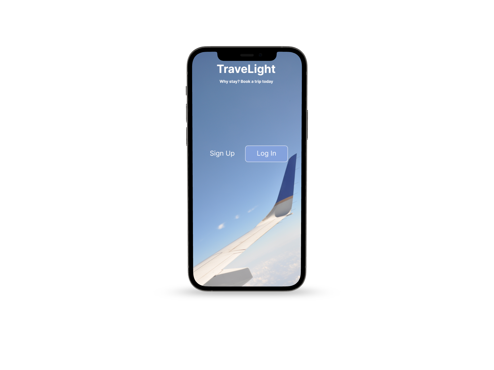
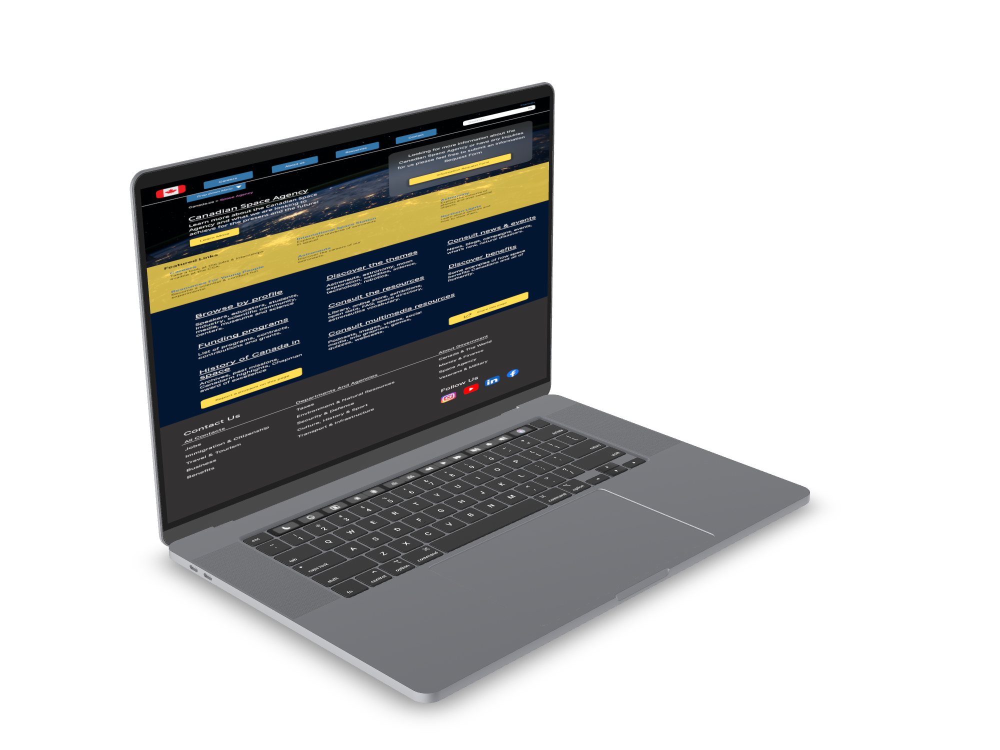
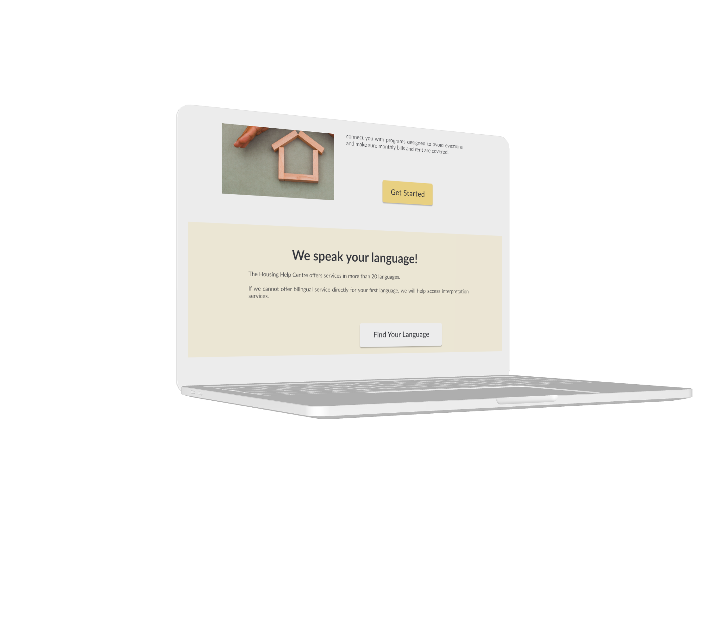

TraveLight
illness aside, the second biggest thing that was effected within people’s lives during the pandemic was their finances. As we enter a “post-pandemic” life people will look to travel after not being able to for over two years. But unfortunately, travel has gotten even more expensive than it was prior to the pandemic. Making travel very difficult for many people.Our goal is to help users find the cheapest option for their flights and stays by pulling data from multiple sources and comparing them; then offering the options to the user , all while displaying price trends to the users. (refer to the application Honey). These solutions will be evident throughout our design.

Government Agency Responsive Web Redesign
Through our own heuristics and ui analysis we will look to bring life to the Space Agency website in addition to executing a revamp for the navigation system the website currently deploys..

The Housing Help Centre Redesign
Donors want to feel effective and generous knowing that their online donation makes a positive impact in their community. We are looking to increase the number and size of online donations to THHC by meeting donors’ needs for a clear mission, operational transparency, and an emotional connection to the cause..